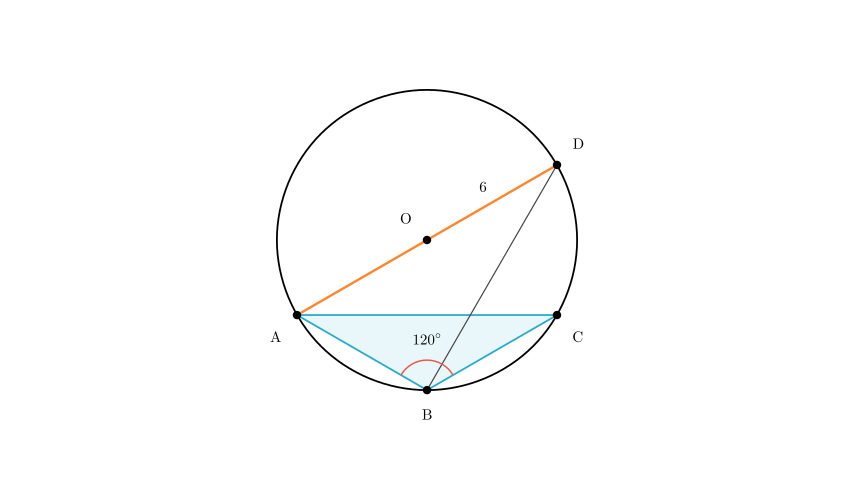
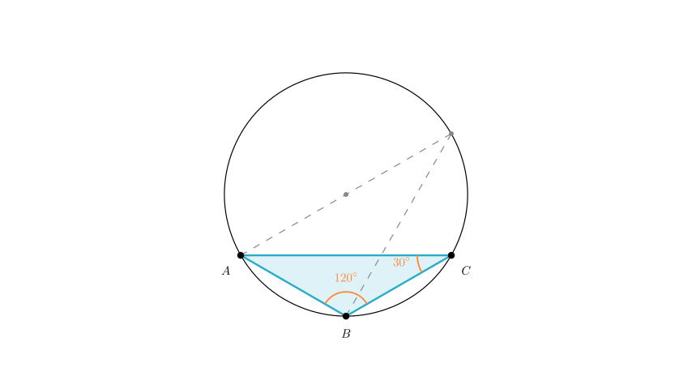

problem_98_math_g9
Problem Statement
As shown in the figure, \(\triangle ABC\) is inscribed in circle \(O\). Given that \(AB = BC\), \(\angle ABC = 120^\circ\), and \(AD\) is the diameter of circle \(O\) with length \(AD = 6\), what is the length of \(AB\)?
Options
Solution Approach
To find the length of chord \(AB\), we will use the properties of inscribed angles and right triangles formed by the diameter. Specifically: 1. Analyze the isosceles triangle \(\triangle ABC\) to find the measure of \(\angle ACB\). 2. Use the property that inscribed angles subtending the same arc are equal to find \(\angle ADB\). 3. Use the property that the diameter subtends a right angle to form a right triangle \(\triangle ABD\). 4. Calculate \(AB\) using trigonometry in the right triangle.

Step 1: Analyze Triangle ABCFirst, let's look at \(\triangle ABC\). We are given that \(AB = BC\), which means \(\triangle ABC\) is an isosceles triangle. We are also given that the vertex angle \(\angle ABC = 120^\circ\).
Since the sum of angles in a triangle is \(180^\circ\), the two base angles (\(\angle BAC\) and \(\angle BCA\)) must be equal and sum to \(180^\circ - 120^\circ = 60^\circ\).
Therefore: \[ \angle BCA = \frac{180^\circ - 120^\circ}{2} = 30^\circ \]

Step 2: Use Inscribed Angle PropertiesNow, consider the arc \(AB\). Both \(\angle ADB\) and \(\angle ACB\) are inscribed angles that subtend (open up to) the same arc \(AB\).
According to the Inscribed Angle Theorem, angles subtending the same arc are equal. Since we calculated that \(\angle ACB = 30^\circ\), it follows that: \[ \angle ADB = 30^\circ \]
 Step 3: Identify the Right Triangle
Step 3: Identify the Right Triangle
We are given that \(AD\) is the diameter of circle \(O\). A fundamental property of circles is that an angle inscribed in a semicircle is a right angle (\(90^\circ\)).
Therefore, \(\angle ABD\), which subtends the diameter \(AD\), must be \(90^\circ\).
This makes \(\triangle ABD\) a right-angled triangle with the hypotenuse being the diameter \(AD\).
 Step 4: Calculate Length AB
Step 4: Calculate Length AB
Now we solve for \(AB\) in the right-angled \(\triangle ABD\): * Hypotenuse \(AD = 6\) * Angle \(\angle ADB = 30^\circ\) * We want to find the side opposite to the \(30^\circ\) angle, which is \(AB\).
Using the sine function: \[ \sin(\angle ADB) = \frac{\text{Opposite}}{\text{Hypotenuse}} \] \[ \sin(30^\circ) = \frac{AB}{AD} \]
We know that \(\sin(30^\circ) = \frac{1}{2}\). Substituting the values: \[ \frac{1}{2} = \frac{AB}{6} \]
Solving for \(AB\): \[ AB = 6 \times \frac{1}{2} \] \[ AB = 3 \]
Conclusion
The length of \(AB\) is 3. This corresponds to Option A.
Final Answer: A